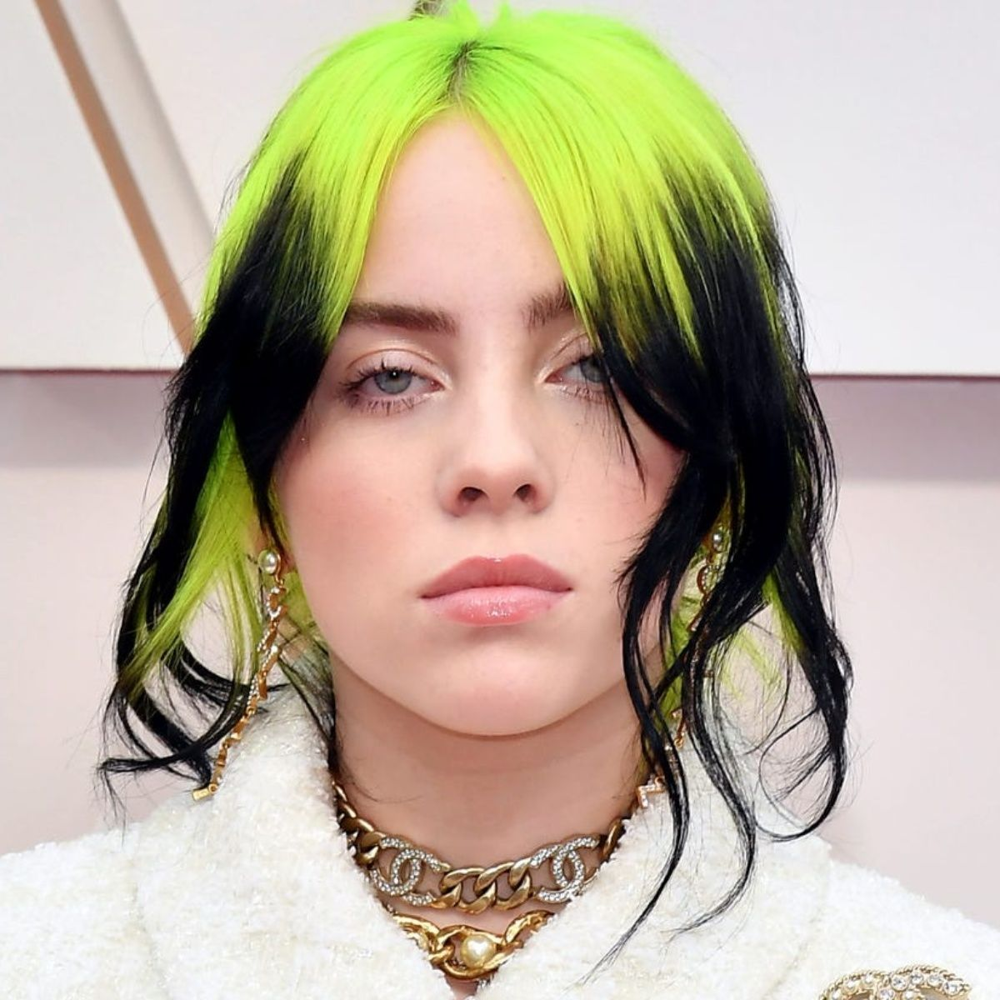
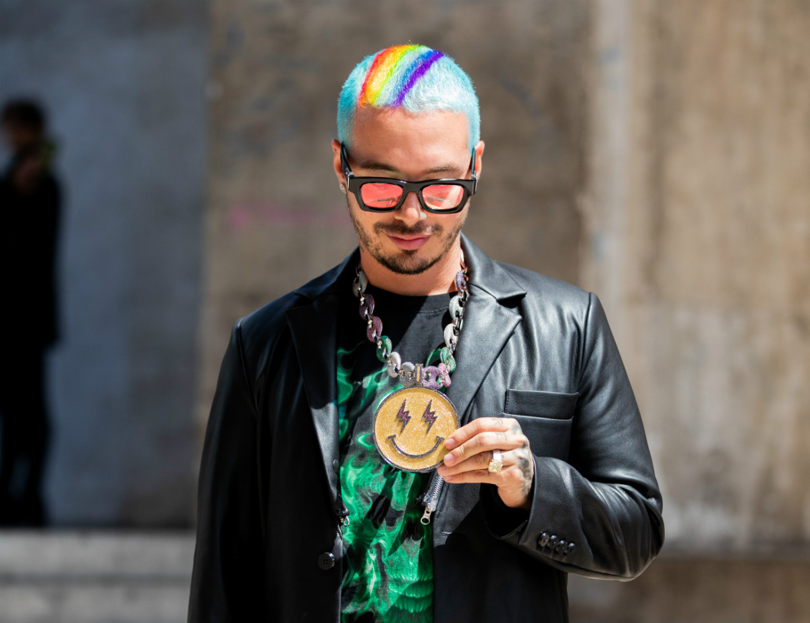

-
TOP 1
- BAD BUNNY
- INFO
Biografía
Benito Antonio Martínez Ocasio (Vega Baja, San Juan, Puerto Rico; 10 de marzo de 1994), más conocido por su nombre artístico Bad Bunny, es un cantante y rapero puertorriqueño de género reguetón y trap. Conocido por sus temas «Soy peor», «Chambea», «Amorfoda», «Callaíta» y más recientemente «Yo perreo sola». El artista cuenta con tres discos uno en colaboración con J Balvin.
- + 800.000 reproducciones semanales
-
TOP 2
- J BIEBER
- INFO
Biografía
Justin Drew Bieber nació el 1 de marzo de 1994 en el St.Joseph's Hospital, en London, Canadá. Poco después se trasladaría a Stratford, Ontario, Canadá, ciudad donde creció. Justin Bieber reside en Estados Unidos desde el año 2008. Sin embargo, solamente posee un visado como residente en Estados Unidos temporal, basado en "habilidades o logros extraordinarios" en un campo, en este caso como artista. Respecto a este hecho, Justin Bieber ha declarado que no está interesado en obtener la ciudadanía estadounidense.
- + 763.000 reproducciones semanales
-
TOP 3
 - BILLIE EILISH
- INFO
Biografía
Billie Eilish Pirate Baird O'Connell (Los Ángeles, California; 18 de diciembre de 2001), conocida como Billie Eilish, es una cantante y compositora estadounidense. Adquirió fama como artista cuando tenía 13 años, a raíz del sencillo «Ocean Eyes» que se publicó en 2015 en SoundCloud y que volvió a lanzarse con un vídeo musical en Youtube en 2016, cuando ella contaba con 14 años, y se convirtió en un fenómeno viral. En 2017, publicó su EP Don't smile at me, producido por su hermano Finneas O'Connell.
- + 650.000 reproducciones semanales
-
TOP 4
 - J BALVIN
- INFO
Biografía
José Álvaro Osorio Balvín (Medellín, 7 de mayo de 1985) conocido como J Balvin, es un cantante colombiano de música urbana, que ha logrado posicionarse tanto en el mercado musical hispano como el anglosajón, llegando a colocar sus temas en número uno, en varias listas musicales, entre ellas Billboard.
- + 600.000 reproducciones semanales
-
TOP 5
- TINI
- INFO
Biografía
Martina Stoessel (Buenos Aires, 21 de marzo de 1997) más conocida como Tini Stoessel o simplemente TINI, es una actriz, cantante y modelo argentina. Comenzó a hacerse conocida por su personaje de Violetta Castillo en la serie original de Disney Channel Latinoamérica, Violetta. En abril de 2016 editó TINI, su primer disco solista, bajo el sello discográfico Hollywood Records el cual obtuvo disco de oro en sus pocas horas de lanzamiento en Argentina y el mismo certificado en Polonia, Austria y Brasil. En julio presentó «Great Escape», su primer sencillo y video solista. También lanzó «Yo me escaparé», versión en español del mismo, con la inclusión de un video dance. También se convirtió en la cara de la marca de ropa Cher.
- + 540.000 reproducciones semanales
TOP 5 ARTISTAS